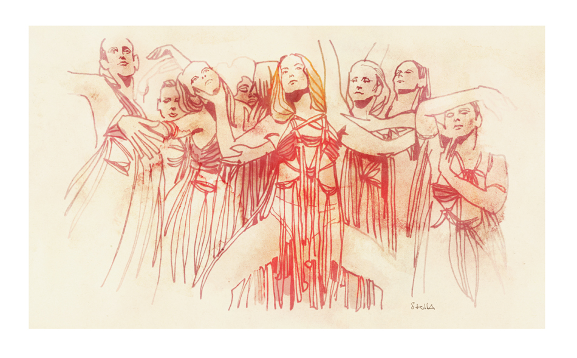

「그녀가 내 안으로 들어오고 싶어 해: 〈서스페리아〉에서의 신체와 정치적 신체」
제언
번역/편집: 제언 · 게시: (2026.01.12)
작품: Suspiria (1977, dir. Dario Argento) / Suspiria (2018, dir. Luca Guadagnino)
글쓴이 · 원문 링크: Amelia Merrill · She Wants to Get Inside Me: The Body and the Body Politic in Suspiria
https://www.brightwalldarkroom.com/2020/03/18/suspiria-2018/
번역
2018년, 루카 구아다니노는 다리오 아르젠토 감독이 1977년에 만든 컬트 클래식 지알로 영화① Suspiria에 대한 오랫동안 기다려온 자신의 해석을 선보였다. 구아다니노의 영화는 아르젠토의 작품보다 러닝타임이 한 시간 더 길며, 훨씬 더 많은 배경 서사를 제공한다. 그는 주인공 수지 배니언(다코타 존슨)을 오하이오 메노나이트 교회의 가출 신도로 설정하고, 냉전 시기 국내 테러리즘이 낳은 폭력과 혼란을 여러 장면의 배경에 배치한다. 또한 춤의 세계를 확장해, 원작이 거의 건드리지 않았던 ‘어두운 마법’이라는 주제적 구성을 플롯과 함께 엮어 넣는다. 아르젠토의 영화는 미학적 응집력이 너무나도 선명하고 정밀해, 색채 팔레트가 여전히 그 영화의 결정적 특징으로 남는다. 내가 눈을 감고 아르젠토의 Suspiria를 떠올리면 붉은색이 보이고, 같은 방식으로 구아다니노의 작품을 떠올리면 뼈의 색이 떠오른다.
아르젠토의 영화에서 아무것도 모른 채 휘말리는 주인공 수지(제시카 하퍼)는 아름답고 온순한 인물로, 마지막 순간이 되어서야 유령이 깃든 무용 아카데미의 수수께끼를 풀어낸다. 반면 구아다니노의 수지는 관객이 알아차리기도 전에 이미 자신의 운명을 장악한다. 그녀는 평생 춤과 베를린, 두 가지 모두에 이끌려 왔고, 영화를 다시 볼 때마다 나는 존슨의 연기 속에서 변화의 지점을—수지가 자신이 누구인지 진짜로 깨닫는 순간을—찾게 된다. 구아다니노의 결말은 처음에는 그 변화를 반영하는 듯 보인다. 수지는 단지 주체성(agency)만이 아니라 권위(authority)까지 지닌다. 그녀는 아르젠토의 전작 주인공처럼 요행으로 승리를 얻지 않는다. 대신 자신의 승리의 매 순간을 직접 설계한다. 겉으로 보기에는 수지가 수지보다 더 진보적인 여성 주인공처럼 보인다. 하지만 구아다니노가 서사를 바꾸었음에도, 그의 Suspiria는 여전히 여성의 몸을 ‘정치적 신체’②로 끌어들여, 더 큰 집단적 목적을 위해 그 몸들을 희생시킨다.
‘몸’은 Suspiria의 필수 요소다. 구아다니노는 냉전기의 예술과 문화에서 현대무용이 맡았던 역할을 치밀하게 연구한 텍스트를 제시하며, 춤 시퀀스를 통해 성적 해방, 공동체적 고통과 치유, 그리고 신체와 정신의 착취를 말한다. 아르젠토의 영화에서는 주로 배경 배우들이 짧고 전통적인 발레 동작을 수행한다. 수지가 리허설 중 어지러워하며 아프기 시작할 때, 하퍼가 실제로 춤추고 있지 않다는 점은 꽤 눈에 띈다. 프레임 안에는 상반신만 들어오기 때문이다. 반면 구아다니노는 전후 독일의 현대무용사를 적극적으로 활용해, 여러 네오-표현주의적 춤 시퀀스를 영화에 삽입한다. 춤이 마녀술의 매개가 되면서, 그는 여성의 몸이 초자연적이거나 사탄적 힘과 역사적으로 결부되어 왔다는 연관성을 강조한다. 수지는 춤을 통해 이세계적 힘을 끌어내는데, 이런 도상은 The Red Shoes에서 Midsommar에 이르기까지 곳곳에서 반복되어 왔다. 구아다니노의 Suspiria에서는 여성적인 것, 폭력적인 것, 예술적인 것, 관능적인 것, 사탄적인 것이 하나로 합쳐진다.
하퍼의 수지가 수많은 무명 무용수 중 하나라면, 존슨의 수지는 마담 블랑(틸다 스윈튼)의 스타 제자다. 그녀는 빠르게 서열을 올라 “볼크(Volk)”③의 주역을 따내는데, 이 춤은 마담 블랑이 1940년대에 처음 안무했고 전쟁 기간 내내 공연했던 작품이다. “볼크”, 즉 “민중”은 국가사회주의자들이 흔히 외친 집결 구호였고, 20세기 초의 ‘볼키시(völkisch)’, 즉 ‘민중의’ 운동은 나치즘의 토대를 놓았다. 냉전 정치에 대한 그의 탐구가 그랬듯, 여기서의 구아다니노의 참조는 기분 좋을 만큼 노골적이다. 독일사에 익숙한 사람이라면 마담 블랑이 “볼크”라는 제목의 춤으로 관객을 맞이하는 장면의 의미를 즉각 알아차릴 것이고, 현대무용을 아는 사람이라면 영화의 사탄적 춤이 바이마르 시대의 저명한 안무가 마리 비그만의 춤과 닮았음을 볼 것이다.
비그만은 독일의 또 다른 거장 피나 바우슈보다 앞선, 현대 표현주의 무용의 선구자였다. 구아다니노의 Suspiria 각본을 쓴 데이비드 카이가니치는 무용 아카데미를 구상할 때 비그만에게서 영감을 받았다고 밝혔다. 비그만은 “헥센탄츠(Hexentanz)”, 즉 “마녀의 춤”④의 서로 다른 세 버전으로 가장 잘 알려져 있으며, 마지막 버전은 제3제국 당국의 특별 허가를 받아 공연되었다. 영화는 비그만과 그녀의 작업을 떠올리게 하는 시각적·신체적 참조로 가득하지만, 그녀의 이름은 끝내 언급하지 않는다. 아마도 파시즘과의 모호한 연관성 때문일 것이다. 비그만은 나치의 명령에 따라 자신의 단체에서 유대인 무용수들을 해고했으며, 그들의 이후 운명은 알려져 있지 않다. Suspiria의 마녀 집단에는 부패와 폭력이 뒤얽힌 갈등이 넘치지만, 마담 블랑은 전쟁 중 마르코스 컴퍼니가 예술을 통해 나치즘에 맞섰다고 말한다. 공동체의 부패에도 서로 다른 유형이 있다는 이 구분은, 집단이 붕괴해 갈수록 점점 더 중요해진다.
독일에서 마녀술과 오컬트에 대한 대중적 관심은 제3제국 시기에 정점을 찍었다. 일부 나치 고위층은 독일인들을 조직화된 기독교로부터 떼어내, 전통적인(다만 다소 왜곡된) 독일식 이교 관습으로 되돌아가게 하려 했다. 홀로코스트의 설계자로 가장 잘 알려진 하인리히 힘러는 마녀와, 그들이 ‘진정한 아리아 여성’으로서 대표한다고 여긴 힘에 집착했다. 그는 중세의 마녀사냥 대부분이 개신교 교회와 유대인 폭도들에 의해 조직되어, 강력한 독일 여성들을 가려내고 죽이기 위한 것이었다고 믿었다. 그 결과 마르코스 컴퍼니와 그것이 상징하는 신체적 해방은, 전통적인 가부장적 교회와 나치즘이 퍼뜨린 ‘가정 숭배’ 이데올로기 양쪽 모두에 의해 억압되었다.
1970년대 독일 정치에 대해 노골적으로 탐구하지 않았던 아르젠토의 영화와 달리, 구아다니노의 영화는 겉으로 보기에 나치즘과 그 뒤를 이은 냉전 권위주의에 대한 비판으로 변모한다. 수지는 마르코스와 블랑의 부패한 통치로부터 무용수들을 해방시킨다. 마녀들은 예술적·성적 자유를 지닌 여성 해방의 전형, 즉 반(反)페미니스트들이 악몽으로 상상할 법한 집단이 된다. 그런데 아르젠토가 이전 영화에서 마녀를 유대인과 은근히 연결했던 점을 떠올리면, 구아다니노의 독재 비판은 아이러니해진다. 아르젠토의 무용 아카데미 교관들은 은근히 돈에 집착하고, ‘어머니들’의 진짜 본성을 안다고 여기는 지역 기독교인들에게 두려움의 대상이 된다. 그들은 누군가 비밀을 밝혀낼 때마다 도시와 나라를 옮기며 끊임없이 도망친다. 많은 관객에게 아르젠토의 마녀들은 무고한 이들을 조종하고 파괴할 수 있는 악마적 여성성의 소유자인 전형적인 괴물이다. 그러나 아르젠토의 Suspiria를 20세기 유럽의 더 넓은 갈등 맥락 속에 놓고 보면, 마녀에 대한 해석은 훨씬 더 미묘해지고 덜 단선적으로 변한다. 그리고 어쩌면 그것이, 구아다니노와 그의 팀이 더 무거운 정치적 주제에 기대어 간 이유를 설명해 줄지도 모른다.
구아다니노의 영화는 ‘방랑하는 유대인’으로서의 마녀를 긍정적으로도, 부정적으로도 다루지 않는다. 원작 Suspiria가 이민자 공포로— 외부인이 당신의 영토와 문화를 침투해 정복할 것이라는 끊임없는 편집증으로—넘실댄다면, 구아다니노의 작품은 동성애 공포로 스며든다. 수지는 마르코스 컴퍼니에서 수련하며 자신의 성적 자아가 피어나는 것을 경험하고, 자신의 몸과 새로 얻은 독립성을 탐색하라는 격려를 받는다. 패트리샤(클로이 그레이스 모레츠)는 정신과 의사에게 마담 블랑의 집착을 두고 신음하듯 말한다. “그녀가 내 안으로 들어오고 싶어 해.” 무용수들은 플라토닉과 로맨틱의 경계를 흐리는데, 수업 전 마담 블랑이 각 학생에게 키스하고, 사라가 수지를 위로하려고 수지의 침대에 올라가며, 결국 컴퍼니는 알몸으로 꿈틀거리는 오컬트 모계 집단을 이룬다. 춤과 연극은 본래 보수적인 사회적 경계를 어느 정도 흐리기 마련이다. 무용수들은 붐비는 분장실에서 옷을 갈아입고, 안무에서 서로의 체중을 나누어 지탱한다. 그럼에도 영화의 쇼트 구성은 수지의 성적 각성을 특히 강조한다. 그녀가 안무를 더 많이 배울수록 성적으로 더 자유로워지며, 바닥 아래 표면 너머에서 기다리는 마녀에게 끌리듯 바닥에 몸을 문지른다. 초자연적인 것과 성적인 것의 결합은, 바닥의 쇼트와 존슨의 엉덩이를 클로즈업한 쇼트를 병치함으로써—그녀가 가능한 한 몸을 바닥에 바짝 붙이려는 순간들을 통해—분명해진다.
구아다니노가 바꾼 결말은, 해방된 여성을 마녀술과 결부시킴으로써 그 여성을 찬양하는 동시에 깎아내린다. 전자 음악의 사용, 독일 냉전 정치의 탐구, 선혈이 튀는 듯한 네온 레드에서 톤을 억제한 색채 팔레트로의 전환에도 불구하고, 새 결말이야말로 이번 각색에서 가장 눈에 띄는 차이다. 팬들은 이 결말에 충격을 표했지만, 되돌아보면 구아다니노는 영화 전반에 걸쳐 수지의 진짜 운명을 암시하고 있음이 분명하다.
원작에서 수지는 아카데미를 떠나 달아난 밤 패트리샤(에바 악센)의 말을 떠올리고, 그 말이 그녀를 숨겨진 통로로 이끈다. 그곳에서 수지는 사라(스테파니아 카시니)의 훼손된 시신을 발견한다. 그녀는 우연히 헬레나 마르코스(렐라 스바스타)를 깨우는데, 마르코스는 수지를 죽이기 위해 사라의 피투성이 몸을 빌려 들게 된다. 그러나 번개가 칠 때, 수지는 커튼 뒤로 마르코스의 살점이 드러난 채 부패해 가는 몸의 윤곽을 본다. 악마 같은 사라가 다가오자 수지는 마르코스를 찌르는데, 이 결말은 오늘날의 공포 영화 관객에게는 다소 지나치게 손쉬운 해결처럼 느껴질지도 모른다. 마녀들은 비명을 지르고 아카데미는 불타며, 수지는 상처 하나 없이 탈출한 채 크레딧이 흐른다.
구아다니노는 이제는 상투적으로 느껴질 수 있는 이런 공포의 클리셰를 쓰지 않는다. 대신 그는 결말을 통해 신체와 정치적 신체에 대한 거의 끝이 없어 보이는 환상곡을 만들어낸다. 수지가 광기에 가까워지고 마녀 집단에서 자신의 역할을 이해하기 시작하면서—심지어 집단의 과거·현재·미래에 대한 자신의 지식을 두고 마담 블랑과 텔레파시로 대화하기까지 하면서—그녀는 위엄과 품위를 갖추고 마르코스를 맞이하러 간다. 마녀들의 사바트에서 학생들이 미친 듯이 춤추는 동안, 교관들은 (스윈튼이 두꺼운 특수 분장을 하고 연기한) 클렘페러 박사를 고문하고, 사라(미아 고스), 올가(엘레나 포키나), 패트리샤를 제물로 바치려 준비한다. 마담 블랑은 빙의에 대해 수지의 동의를 확인하려 하고, 마르코스는 이를 방해했다며 블랑을 잔혹하게 훼손한다. 그러자 수지는 마르코스의 부패한 통치에 맞서 그를 추궁하고, 오하이오에서 자신의 생모가 죽음에 잠겨 가는 바로 그때, 죽음 그 자체를 불러낸다. 그리고 자신이 ‘마테르 수스피리오룸(Mater Suspiriorum)’— 모든 마녀가 그로부터 비롯되는 ‘세 어머니’ 중 하나—임을 드러낸다. 그녀는 마르코스를 죽이고, 처참하게 망가진 사라·올가·패트리샤에게 고통 없는 죽음을 선사하며, 학생들에게는 자신을 기리며 계속 춤추라고 말한다. 다음 날 아침 눈을 뜬 학생들은 사바트가 그저 악몽이었을 뿐이라고 여긴다.
이처럼 제목 속 존재(마테르 수스피리오룸)를 불러들이는 설정은 수지의 주체성을 되찾아 준다. 수지는 아카데미에 들어서는 순간부터 이미 자신의 운명을 통제하고 있었을지도 모른다. 플래시백은 어린 수지가 지도 위의 베를린에 이끌리는 모습을 보여준다. 수지가 미국 지리 수업 대신 자신의 독일 재세례파 뿌리를 배우고 싶어 하자, 어머니는 다리미로 수지의 손가락을 지져 벌을 준다. 꿈의 시퀀스에서 수지는 오하이오의 반항적인 십대였을 때 마담 블랑과 함께 춤을 추며, (훈련이 부족하다고 스스로 인정함에도) 마치 원래부터 자기 안에 있었던 듯한 비현실적인 춤의 능력을 탐색한다. 그녀는 한밤중에 “난 내가 누군지 알아!”라고 외친다. 수지의 얼굴을 클로즈업하는 쇼트는 종종 그녀의 거친 숨을 담고, 곧바로 죽어 가는 어머니의 병든 코골이와 병치한다. 이런 점에서 수지가 문자 그대로 ‘한숨의 어머니’라는 사실이 드러나는 순간은 뻔하게, 어쩌면 어색할 정도로 느껴지기도 한다. 그 복선이 상상력 있는 장치로 보이든 과하게 노골적인 장치로 보이든, 무지한 피해자에서 영화의 사건을 조율하는 존재로 변화하는 수지의 궤적은, 마녀에 대한 보다 계몽된 해석을 반영한다는 점에서 신선하다.
하지만 서사가 억압적 힘으로부터의 여성 해방을 암시하는 와중에도, ‘희생’이라는 발상 자체를 통해 남성적 시선은 여전히 은근히 스며든다. 수지는 오하이오 메노나이트 교회의 가부장적 질서에 반기를 들고 몰래 춤 공연을 보러 다니며, 가족의 승인 없이 독일로 향한다. 몸을 거의 가리지 못하는 해지고 술 장식이 달린 그녀의 춤 의상은, 뻣뻣한 메노나이트 원피스와는 거리가 멀다. 우리는 수지와 함께 그 여정에 동행하며, 집을 떠나 현대 세계를 받아들이는 그녀의 용기를 칭찬하게 된다.
그러나 수지의 가부장제에 대한 반항이 언제나 이렇게 무해하게 진보적인 것은 아니다. 꿈-플래시백 시퀀스에서 수지는 영화 내내 고문 도구로 등장해 온 날카로운 갈고리를 자위 도구로 사용한다. 이 이미지는 단순한 성의 탐색이 아니라, 비인간적인 폭력과 쾌락적 육체 경험을 등식으로 묶어 버린다. 아마도 이 장면은 충격 효과를 노린 것일지도 모른다. 남을 기쁘게 하려 하고 스승을 공경하는, 수줍고 불안한 수지에게서 우리가 기대하는 모습은 아니기 때문이다. 다만 여기서 주목해야 할 점이 있다. 마녀들은 그 갈고리를 무용수들에게만 사용하는 것이 아니라, 이름 모를 불운한 남자들에게도 사용한다. 한 장면에서 숨어 있던 수지는 ‘어머니들’이 벌거벗은 형사들을 성적으로 모욕하고, 갈고리로 성기를 훼손하는 모습을 목격한다. 이 순간까지 우리는 아카데미를 가부장제의 공포로부터의 피난처— 여성들이 모계적 공간에서 자신의 몸, 독립성, 관계를 탐색할 수 있는 장소—로 여겨 왔다. 그러나 마녀들이 굳이 남성들을 성적으로 고문하는 모습을 보여 줌으로써, 구아다니노는 해방된 여성을 ‘남성을 지배하고 파괴하는 존재’로 보는 고정관념을 강화한다. 따라서 수지의 ‘무기화된 자위’는, 그녀가 마녀보다 더 끔찍한 존재임을 알리는 신호가 된다. 즉, 그녀는 페미니스트인 것이다.
구아다니노가 성적인 것을 사탄적인 것과 등치시키는 방식은, 그의 이전 작품들을 좋아하던 팬들이 기대하는 것보다 오히려 아르젠토에 더 가깝게 그를 정렬시킨다. 구아다니노는 로맨틱 드라마로 잘 알려져 있는데, 그중 일부는 격렬한 플롯을 담고 있으며, 대부분은 탐닉적이고 호화로운 촬영으로 가득하다. 자유로운 수영장가의 시간이라는 특권을 구아다니노만큼 잘 포착하는 사람도 없다. 그러나 그의 Suspiria는 이와 대조적으로, 영화적 채찍질 같은 충격을 유발하려는 빠르고 거슬리는 점프컷으로 가득하다. 카메라는 존슨의 시점에서 스윈튼의 시점으로 자주 ‘딱딱’ 튀어, 두 여성을 ‘자매 마녀’로 연결한다. 아르젠토의 Suspiria가 아카데미의 복도를 향해 좁혀 들어가는 쇼트들을 많이 사용한다면, 구아다니노는 이를 흉내 내듯 건축물로부터 바깥으로 빠져나오는 쇼트들을 많이 사용한다. 두 감독 모두 높은 각도의 컷어웨이 쇼트를 활용하는데, 이는 등장인물들이 보이지 않는 누군가에게 감시당하고 있음을 암시하면서, 관객이 그 정체불명의 관찰자와 자신을 동일시하도록 만든다.
구아다니노는 다른 영화들에서는 더 조용한 편일지도 모르지만, 아르젠토에게 바치는 그의 찬가는 여성의 몸을 향한 폭력 이미지로 넘쳐난다. 마녀들은 사라의 다리뼈가 몸 밖으로 튀어나오게 만들고, 패트리샤를 굶겨 유령처럼 보이게 만들며, (혹은 수지가) 올가의 뼈를 부러뜨리고 짓이겨 뒤틀린 덩어리로 만들어, 올가가 토하고 오줌을 지리며 죽여 달라고 빌게 만든다. 구아다니노의 폭력은 특수효과의 발달 덕분에 더 시각적으로 강렬하고 섬뜩해졌는데(반면 아르젠토의 살인은 이제는 광대처럼 비현실적으로 보이지만, 소방차처럼 새빨간 피는 여전히 상징적이다), 그는 또한 다소 문제적인 방식으로 비전통적인 젠더도 탐구한다. 그는 양성적인 무용수의 몸에 가해지는 폭력을 부각시키고, 공개적으로 젠더-플루이드로 알려진 스윈튼을 한 명이 아니라 두 명의 마녀로 캐스팅한다. 성, 폭력, 비규범적 젠더와 젠더 수행, 그리고 오컬트를 한데 엮는 그의 방식은 아르젠토를 되비춘다.
구아다니노의 반전 결말은 그를, 여성의 몸을 국가를 위한 희생물로 사용해 온 긴 남성 감독들의 목록에 올려놓는다. 수지를 마테르 수스피리오룸으로 만들어 버림으로써, 구아다니노는 그녀를 ‘정치적 신체’로 만든다. 수지는 자신의 가슴을 찢어 열어 검고 불멸의 심장을 드러낸다. 가늘고 유연한 여성성으로 이루어진 그녀의 몸은 아카데미가 되고, 마녀 집단이 되고, 마녀술 그 자체의 영속이 된다. 그녀는 아르젠토의 순진한 수지보다 더 강력한 존재이지만, 국가의 선을 위해 자신의 이해관계를 희생한다. 구아다니노가 자신의 여성들의 몸을 잘못된 ‘더 큰 선’을 위해 조종하는 동안, 수지는 삶의 고문에서 마침내 벗어난 사라의 몸을 피로 얼룩진 피에타의 자세로 받아 든다.⑤ 주제적으로 보자면, 이는 비토리오 데 시카의 La ciociara 말미에서 소피아 로렌이 엘레오노라 브라운을 품에 안는 장면과 거의 다르지 않다. 그 영화에서 모녀는 우스꽝스러운 프랑스계 아프리카 병사들 무리에게 강간당하고(횡설수설을 한다는 등, 그건 또 다른 글감이지만), 체지라(로렌)는 짓밟힌 딸 로제타의 몸을 끌어안은 채, 전쟁의 부수적 피해로 두 여성의 신체적 자율성이 유린되며 그들이 이제 ‘희생’이 되었음을 생각하게 만든다. 브라운이 연기한 인물이 현대 국가에 바쳐진 희생적 처녀라면, 고스의 사라도 마녀 집단의 진보를 위해 도살된 어린 양이다.
수지는 무용수로서의 정체성, 미국인으로서의 정체성, 심지어 여성으로서의 정체성마저 초월한다. 이제 그녀의 지위는 그저 ‘마녀’일 뿐이다. 로제타가 폭력으로 인해 사춘기를 빼앗기면서, 그녀는 이탈리아 여성이라기보다 이탈리아 그 자체가 된다. 불협화음을 내는 땅의 통제권을 두고 싸우는 서로 다른 세력에게 강간당한, 이탈리아라는 나라 말이다. 여성 관객으로서, 배우로서, 영화 창작자로서 우리는 이런 식으로 우리의 인간성이 대체되는 일에 익숙하다. 우리의 몸은 우리의 것이 아니라, 어떤 것을 대표하는 것이 된다. 우리의 꿈도 우리에게 속하지 않고, 상징이 된다. 폭력이 해방에서 필연적으로 수행하는 역할에 대한 풍부하게 층위진 성찰임에도, 구아다니노의 Suspiria는 잘 빚어낸 여성들을 말로 희생시켜 버림으로써 휘청거린다. 서로 다른 부패의 힘들이 나란히 존재한다는 사실을 인정하는 것만으로는 충분하지 않다. 여전히 여성이 공동체를 안쪽에서부터 침식할 때—그 침식의 힘 자체가 여성의 몸일 때—구아다니노가 만들어낸 것이 ‘잘못된 종류의 바디 호러’임이 분명해진다.
각주
① 지알로(giallo): 1960~70년대 이탈리아에서 발전한 범죄·스릴러·호러 혼합 장르. 살인 미스터리, 과장된 스타일, 강렬한 색채/음악, 잔혹한 살해 장면 등이 특징으로 거론된다. ↩
② 정치적 신체(body politic): 국가·공동체·정치 질서를 하나의 ‘몸’에 비유해 설명하는 개념. 개인의 몸(body)과 대비되는 은유로, 문학·정치철학에서 오래 사용되어 왔다. ↩
③ Volk / völkisch: 독일어로 ‘민중/민족’ 계열을 뜻하는 말. 19~20세기 초 독일 민족주의 담론과 결합하며 나치즘의 이념적 토양과 연결되는 맥락이 있다. ↩
④ Hexentanz: 독일 현대무용(표현주의 무용)의 대표적 안무가 마리 비그만의 작품군에서 특히 알려진 제목으로, 직역하면 “마녀의 춤”이다. ↩
⑤ 피에타(pietà): 성모 마리아가 십자가에서 내려진 예수를 품에 안은 구도를 가리키는 미술사적 용어로, “애도/연민”의 이미지로 자주 인용된다. ↩